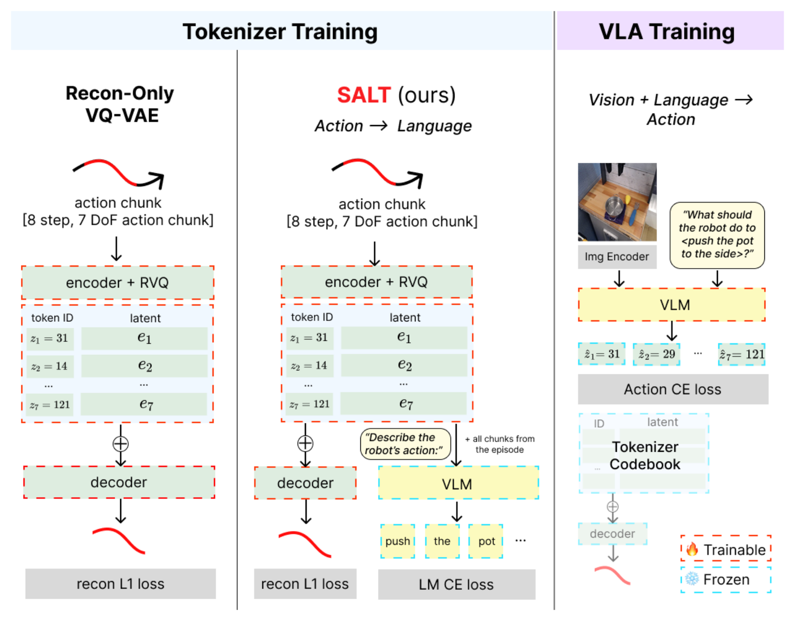
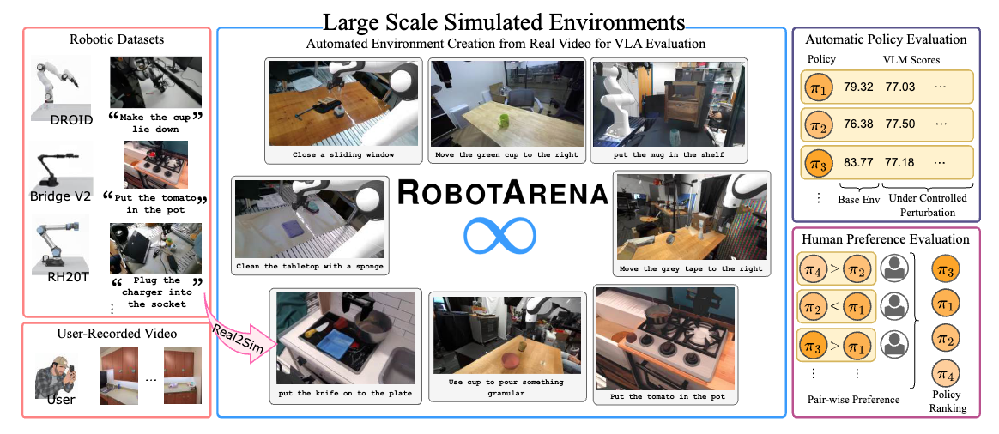
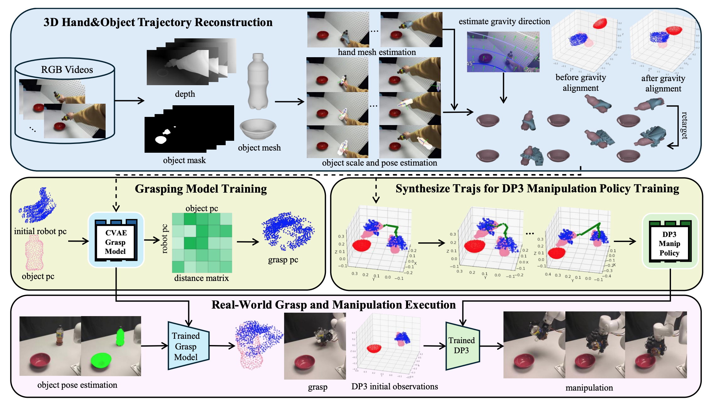

Selected Publications

Lost in Reconstruction: Aligning Action Representations with Language in Vision-Language-Action Models
arXiv preprint, 2026

RobotArena ∞: Unlimited Robot Benchmarking via Real-to-Sim Translation
International Conference on Learning Representations (ICLR), 2026


Image-based visual servo control for aerial manipulation using a fully‑actuated UAV
IEEE/RSJ International Conference on Intelligent Robots and Systems (IROS), 2023